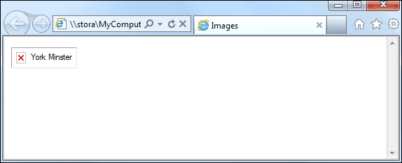

Home Intro Tags and Element Attribute Image Table List Color Form Register with US
You remember at the start of this course we talked about file extensions, and you learnt what the .html file extension was? You're now going to learn about two new file extensions: JPEG and GIF.
Just like web pages and word process documents have file extensions, so too do images have file extensions. There are a wide range of file extensions used for images. The two most popular file extensions used on web pages are JPEG and GIF. (PNG is another popular image format. It's similar to GIF, so we won't discuss it.)
GIF stands for Graphics Interchange Format, and was developed by Compuserve. It uses something called a LZW compression algorithm to reduce the size of the file. The size of your images on web pages is a crucial factor for people using slower connections. If you have an image that is 1 megabyte in size, and I only have a 2 megabit connection speed then it's going to take about 4 seconds to load the image on the page. That may not seem a long time, but if my speed drops to 500 kilobits per second then it will take 16 seconds to appear. I'm not likely to wait that long for your image to load!
So compressing the size of an image makes sense on the internet. If you've taken a photo and then saved it to your computer, take note of the file extension used. The software package you use to view the image will probably give you the opportunity to save the file in another format. Saving the file as a GIF image will greatly reduce the size of the file.
There is a down side, however, in converting to a GIF. The number of colours in your image is capped at 256 colours. For realistic photos, this is not nearly enough. And although your file size is greatly reduced so too could be the quality of your image.
JPEG is the other popular image format used on web pages. It stands for Joint Photographic Experts Group, and allows you to have images with more than 256 colours. In fact, millions more. Again, your original image is compressed when you convert to a JPEG image, so some loss of quality is inevitable. If you want to show off your photos in their best light, converting to JPEG rather than GIF is the best option for the internet. The size of the file might be slightly higher, but then so will the quality.
The downside to JPEG images is that jpeg is a Loss Compression format. This means that image quality goes down (rapidly) the more times you compress and uncompress the image. This happens when you save the file over and over again. GIF on the other hand is a Lossless Compression format, meaning there will be no loss of quality when you compress and uncompress the image.
Another thing you can't do with JPEG images is have a transparent background. So if your image was this:
and you wanted to get rid of that black background, you could set the black colour as a transparent colour, if you save as a GIF. With a JPEG, you're stuck with the black background. (You can also animate GIF images, which you can't do with JPEG images.)
In general, if your image is less than 256 colours, then save the image as a GIF; if the image is more than 256 colours, and quality is important, then save the image as a JPEG. (Modern digital cameras and mobile phones usually save your pictures in the JPEG format.)
So you have your image file, either a GIF file or a JPEG. How do you get it into a web page? You do so with the IMG tag in HTML. The basic IMG tag looks like this:
<img src="some_image.gif">
There are no closing tags for the img tag. So you don't do this:
<img src="some_image.gif"></img>
In between a pair of angle brackets, you type the letters IMG (short for image, of course). After a space, you type src. This stands for Source and means the location of your image. After an equals sign, you type the name of your image between a pair of double quotes.
It's essential that you get the src part right, though. To do that, you need to know about Absolute versus Relative file referencing.
Take a look at this file reference:
C:\Users\Owner\Documents\HTML\some_image.gif
Starting from the right-hand side, this says that there is an image called some_image.gif. This has been saved into a folder called HTML. The HTML folder is in the Documents folder. The Documents folder is in a folder called Owner. The Owner folder is in a folder called Users, which is on the C drive. This is an Absolute file reference. It points to a specific location on your C drive.
Another example of an Absolute References is this:
http://www.abolastutorite.co.uk
That's an absolute reference to a web page on the internet. Perfectly OK, and you'll see how to add links to web pages later. But Absolute References and not terribly practical when it comes to you own images and your own html pages. Relative References are much better.
So with Relative Referencing, if you put all your images and web pages in the same folder, the browser will know where to find everything. And when you're asking the browser to display an image or another web page, you only need the name of the image or web page. You don't need to do this:
<IMG SRC=" C:\Users\Owner\Documents\HTML\some_image.gif">
You can just do this:
<IMG SRC="some_image.gif">
On a professional level, though, dumping everything into one folder is frowned upon. If you created a folder called "web_site" you would be expected to create other folders inside this one. A folder called "images" to store all your image files; a folder called "scripts" to store any external code; and a few other folders as well.
For example, suppose you have a web page called index.html. You've place this web page inside of a folder called web_site. You've created another folder inside of your web_site folder. You've called this new folder images. So your file and structure looks like this:
Of course, you will have placed all of your images in the images folder. Now, if you want one of those images on the index.html page, you couldn't do this:
<IMG SRC="some_image.gif">
If you tried that, the image wouldn't display. That's because you haven't told the browser about that folder called images. You would have to do this:
<IMG SRC="images/some_image.gif">
The forward slash means "look for a folder called . . . that is in the same folder as the current file." In this case, look for a folder called "images". (The current file is index.html, which is where you want the image to appear.)
When you use IMG you are using a HTML tag. The SRC part is called an attribute. There are lots of other attributes you can add to the IMG tag. Here are the image attributes in HTML 5:
ALT
SRC
HEIGHT
WIDTH
The first attribute is ALT. You use it like this:
<IMG SRC="images/minster.jpg" ALT="Minster">
ALT means "alternative text". If the image does not display then users will see the text between the double quotes of ALT. Try it out. Change your HTML code to this:
<IMG SRC="images/ministerss.jpg" ALT="Minster">
Here, we've changed the name of the image. Now save your work and refresh your page in the browser. You should see this (Internet Explorer):

Internet Explorer has added the ALT text after the red X.
You should always add some ALT text to your IMG tags as it is helpful to blind and partially sighted users: the ALT text will be read out. ALT text is also useful for search engines, especially Google's image search.
Another thing you can do with the Image tag is specify a new height and width. This one is quite easy. Change your image tag to this (we've left the ALT tag off):
<IMG SRC="images/minster.jpg"
HEIGHT="512" WIDTH="384">
The original image was 2048 pixels high by 1536 pixels wide. By changing the Height and Width, we can decrease the size of the image. The image itself will still take the same amount of time to load into a browser because we haven't changed the size of the JPEG file. All we've done is to change the height and width attributes of the IMG tag.
This, however, would not be practical on the internet, because the size of the JPEG file wouldn't change. All you'll do is use up more download time to get a smaller image. So when changing image size with the Height and Width attributes, go up in size and not down, as we have done here. If your images are too big, use image editing software to reduce the height and width.